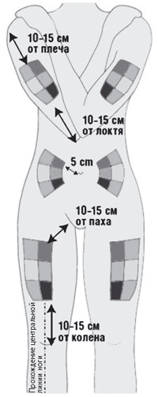
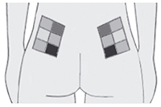
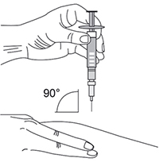
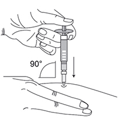

|
 |
| ТИМЕКСОН® (TIMEXON) glatiramer acetate раствор д/п/к введения | ||||||
|
Клинико-фармакологическая группа: Иммуномодулятор. Препарат, применяемый при рассеянном склерозе Номер и дата регистрации: ЛП-005103 от 10.10.18 Код ATX: L03AX13 |
Владелец регистрационного удостоверения: зарегистрировано и произведено Представительство: | |||||
Форма выпуска, состав и упаковка Раствор для п/к введения от бесцветного до светло-желтого цвета, слегка опалесцирующий.
Вспомогательные вещества: маннитол - 40 мг, вода д/и - до 1 мл. 1 мл - шприцы трехкомпонентные из бесцветного стекла (1) - упаковки ячейковые контурные (6) в комплекте с салфетками спиртовыми (6 шт.) - пачки картонные. | ||||||
| ||||||
Описание препарата основано на официально утвержденной инструкции по применению и утверждено компанией-производителем для издания 2021 г. | ||||||
Фармакологическое действие |
Фармакокинетика |
Показания |
Режим дозирования |
Побочное действие |
Противопоказания |
Беременность и лактация |
Особые указания |
Передозировка |
Лекарственное взаимодействие |
Условия хранения и сроки годности |
Условия реализации
Фармакологическое действие
Механизм действия глатирамера ацетата у пациентов с рассеянным склерозом (РС) не до конца изучен. Полагают, что глатирамера ацетат изменяет иммунные процессы, предположительно играющие основную роль в патогенезе рассеянного склероза. Данная гипотеза подтверждается результатами исследований, проведенных с целью изучения патогенеза экспериментального аллергического энцефаломиелита (ЭАЭ). ЭАЭ часто используют в качестве экспериментальной модели рассеянного склероза. Исследования, проведенные на животных и с участием пациентов с рассеянным склерозом, показали, что введение глатирамера ацетата вызывает периферическую индукцию и активацию глатирамера ацетат-специфических супрессорных Т-лимфоцитов. Рецидивирующе-ремиттирующий рассеянный склероз Результаты 12-месячного плацебо-контролируемого исследования подтвердили эффективность глатирамера ацетата в дозировке 40 мг/мл при п/к введении 3 раза в неделю в отношении снижения частоты обострений. При проведении клинического исследования критериями включения пациентов с рецидивирующе-ремиттирующим рассеянным склерозом были по меньшей мере одно документально подтвержденное клиническое обострение за последние 12 месяцев, или два обострения за последние 24 месяца, или одно обострение за последние 12-24 месяца при наличии по меньшей мере одного очага, накапливающего контраст (Gd+) и визуализируемого на Т1-взвешенных МРТ изображениях за последние 12 месяцев. Первичной целью исследования было определение общего количества подтвержденных обострений. Вторичной целью - определение совокупного числа новых/увеличившихся очагов, выявляемых на Т2-взвешенных МРТ изображениях, и совокупное число очагов, накапливающих контраст и визуализируемых на Т1-взвешенных изображениях на 6-м и 12-м месяце исследования. В исследование было рандомизировано 1404 пациента в соотношении 2:1 в группу, получавшую лечение глатирамера ацетатом в дозе 40 мг/мл (n=943) или в группу плацебо (n=461) соответственно. Обе группы были сопоставимы по исходным демографическим показателям, особенностям течения рассеянного склероза и МРТ параметрам. Пациенты имели в среднем 2.0 обострения заболевания в течение 2 лет до скрининга. По сравнению с группой плацебо у пациентов, получавших глатирамера ацетат в дозе 40 мг/мл 3 раза в неделю, наблюдалось статистически значимое снижение частоты обострений и совокупного количества очагов на Т2-взвешенных изображениях и очагов, накапливающих контраст на Т1-взвешенных изображениях, что соответствует терапевтическому эффекту глатирамера ацетата в дозе 20 мг/мл при его ежедневном введении. Прямой сравнительный анализ эффективности и безопасности глатирамера ацетата в дозе 20 мг/мл (при ежедневном введении) и 40 мг/мл (при 3-кратном еженедельном введении) в рамках данного исследования не проводился. При проведении данного 12-месячного исследования не было получено доказательств влияния препарата на прогрессирование инвалидизации или длительности обострений. В настоящее время нет данных относительно применения препарата у пациентов с первично- или вторично- прогрессирующим рассеянным склерозом. Фармакокинетика
Исследований фармакокинетики у пациентов не проводилось. Данные in vitro, а также ограниченные данные, полученные при участии здоровых добровольцев, показывают, что при п/к введении активное вещество быстро абсорбируется, при этом большая часть его распадается на мелкие фрагменты в подкожной клетчатке. Данные доклинических исследований Доклинические данные, основанные на исследованиях фармакологической безопасности, токсичности при многократном введении, репродуктивной токсичности, генотоксичности или канцерогенности, не указывают на наличие особых вредных факторов для человека, кроме данных, уже включенных в разделы данной инструкции по медицинскому применению препарата. Ввиду отсутствия данных по фармакокинетике, невозможно определить допустимые пределы концентрации у человека в сравнении с животным. У небольшого количества крыс и обезьян, которым вводили препарат по меньшей мере в течение 6 месяцев, отмечалось отложение иммунных комплексов в почечных клубочках. В 2-летнем исследовании на крысах не наблюдалось отложения иммунных комплексов в почечных клубочках. У сенсибилизированных животных (морских свинок и мышей) после введения препарата отмечалась анафилаксия. Актуальность этих данных для человека не известна. Токсическое действие в месте инъекции после повторного введения препарата животным относится к распространенным реакциям. Режим дозирования
Препарат применяют в виде п/к инъекций. Рекомендуемая доза - по 40 мг препарата (один заполненный раствором препарата шприц для инъекций) 3 раза в неделю, минимальный интервал между инъекциями – 48 ч. Препарат не предназначен для в/в или в/м введения. В настоящее время данные о длительности курса лечения отсутствуют. Решение о назначении длительного курса лечения должен принимать лечащий врач в каждом конкретном случае. Пациентам рекомендуется пройти обучение по технике самостоятельного проведения инъекций. Первая инъекция (а также 30 мин после нее) должна проходить под наблюдением квалифицированного специалиста. Для снижения риска появления раздражения или боли в области инъекции каждый раз необходимо менять место инъекции. Каждый шприц с препаратом Тимексон® предназначен только для однократного применения. Препарат не рекомендован к применению у пациентов в возрасте до 18 лет, поскольку клинические исследования у этих возрастных групп не проводились. Эффективность и безопасность препарата у пациентов пожилого возраста не изучались. Эффективность и безопасность препарата у пациентов с почечной недостаточностью не изучались. Рекомендации для пациентов по применению препарата 1. Следует убедиться в том, что есть все необходимое для инъекции: одноразовый шприц, заполненный раствором препарата, контейнер для использованных шприцев, ватный тампон, смоченный спиртом. 2. Перед инъекцией извлечь одноразовый шприц из контурной ячейковой упаковки, удалив защитную бумажную полоску. 3. Выдержать шприц с раствором при комнатной температуре не менее 20 мин. 4. Перед введением препарата тщательно вымыть руки водой с мылом. 5. Внимательно осмотреть раствор в шприце. При наличии взвешенных частиц или изменений цвета раствора препарат не следует применять. 6. Выбрать место для инъекции. Возможные зоны для инъекций обозначены на рис.1 и 2: руки, бедра, ягодицы, живот (следует избегать зоны примерно 5 см вокруг пупка). Не следует проводить инъекцию в болезненные места, обесцвеченные, покрасневшие участки кожи или области с уплотнениями и узелками. Внутри каждой инъекционной зоны достаточно места для нескольких инъекций. Рекомендуется составить схему мест инъекций и иметь ее при себе. Для инъекций на ягодицах и руках потребуется помощь другого человека.  Рис. 1. Схема расположения мест инъекций.  Рис. 2. Схема расположения мест инъекций в ягодичную область. 7. Снять защитный колпачок с иглы. 8. Предварительно обработав место инъекции ватным тампоном, смоченным спиртовым раствором, слегка собрать кожу в складку большим и указательным пальцами. 9. Располагая иглу шприца перпендикулярно месту инъекции (рис. 3), проколоть кожу и, равномерно надавливая на поршень шприца, ввести его содержимое в место инъекции (рис. 4).  Рис. 3.  Рис. 4. 10. Удалить иглу движением шприца перпендикулярно месту инъекции. 11. Поместить шприц в контейнер для использованных шприцев. Если пациент забыл ввести препарат Тимексон®, необходимо сделать инъекцию немедленно, как только пациент вспомнит об этом. Нельзя вводить двойную дозу препарата. Побочное действие
Большинство данных по безопасности применения глатирамера ацетата 40 мг/мл были накоплены на основании применения препарата глатирамера ацетата 20 мг/мл в виде ежедневных инъекций. В этом разделе представлены данные, накопленные за время проведения 4 плацебо-контролируемых клинических исследований по применению препарата глатирамера ацетата в виде раствора для п/к инъекций в дозе 20 мг/мл 1 раз/сут и 1 плацебо-контролируемого исследования применения глатирамера ацетата в виде раствора для п/к инъекций в дозе 40 мг/мл 3 раза в неделю. Глатирамера ацетат 20 мг/мл (применяется ежедневно) Наиболее часто в ходе клинических исследований препарата глатирамера ацетата отмечались реакции в месте введения инъекции. Проведенные плацебо-контролируемые исследования показали, что доля пациентов, сообщивших о данных нежелательных явлениях минимум 1 раз в неделю, составляла 70% для препарата глатирамера ацетата и 37% для плацебо. Чаще всего наблюдались покраснение, боль, уплотнение, зуд, отек, воспаление и гиперчувствительность. Реакция, ассоциированная, по крайней мере, с одним или более симптомов (вазодилатация, боль в груди, одышка, учащенное сердцебиение или тахикардия), которая проявляется через несколько минут после инъекции, называется немедленной постинъекционной реакцией. По крайней мере один из симптомов указанной реакции наблюдался минимум один раз у 31% пациентов, получавших препарат глатирамера ацетат, по сравнению с 13% пациентов, получавших плацебо. Все нежелательные реакции, наиболее часто наблюдаемые у пациентов, получавших глатирамера ацетат, по сравнению с группой плацебо, представлены ниже. Эти данные были получены в ходе 4 двойных слепых, плацебо-контролируемых исследований с участием 512 пациентов, получавших глатирамера ацетат ежедневно и 509 пациентов, получавших плацебо, в течение 36 месяцев. В трех исследованиях участвовали 269 пациентов с диагнозом рецидивирующе-ремиттирующий рассеянный склероз, которые получали глатирамера ацетат ежедневно в течение 35 месяцев и 271 пациент из группы плацебо. В четвертом исследовании участвовали 243 пациента (группа глатирамера ацетата) с первым клиническим эпизодом заболевания, у которых был установлен высокий риск развития клинически подтвержденного рассеянного склероза, и 238 пациентов, получавших плацебо. Продолжительность исследования составляла 36 месяцев. Частота развития нежелательных реакций классифицирована следующим образом: очень часто (≥1/10); часто (≥1/100, но <1/10); нечасто (≥1/1000, но <1/100); редко (≥1/10000, но <1/1000). Инфекции и инвазии: очень часто – инфекции, грипп; часто – бронхит, гастроэнтерит, средний отит, инфекция, вызванная Herpes simplex, ринит, периодонтальный абсцесс, вагинальный кандидоз*; нечасто – абсцесс, воспаление подкожно-жировой клетчатки, фурункулез, пиелонефрит, инфекция, вызванная Varicella zoster. Новообразования, включая полипы и кисты: часто - доброкачественные новообразования кожи, новообразования; нечасто - рак кожи. Со стороны кроветворной и лимфатической систем: часто - лимфаденопатия*; нечасто - лейкоцитоз, лейкопения, спленомегалия, тромбоцитопения, изменение морфологии лимфоцитов. Со стороны иммунной системы: часто - реакции гиперчувствительности. Со стороны эндокринной системы: нечасто - зоб, гипертиреоз. Со стороны обмена веществ и питания: часто - анорексия, увеличение массы тела*; нечасто - непереносимость алкоголя, подагра, гиперлипидемия, гипернатриемия, снижение концентрации ферритина в сыворотке крови. Нарушение психики: очень часто - тревога*, депрессия; часто - нервозность; нечасто – необычные сновидения, психоз, эйфория, галлюцинации, агрессивность, мания, расстройства личности, суицидальные попытки. Со стороны нервной системы: очень часто - головная боль; часто - извращение вкуса, гипертонус мышц, мигрень, нарушения речи, обмороки, тремор*; нечасто - туннельный синдром запястья, когнитивные расстройства, судороги, дисграфия, дислексия, дистония, нарушение моторных функций, миоклонус, неврит, нейромышечная блокада, нистагм, паралич, паралич малоберцового нерва, ступор, дефект полей зрения. Со стороны органов зрения: часто - диплопия, нарушение зрения*; нечасто - катаракта, повреждение роговицы, сухость склеры и роговицы, кровоизлияние в глаз, птоз век, мидриаз, атрофия зрительного нерва. Со стороны органов слуха и равновесия: часто - нарушение слуха. Со стороны сердечно-сосудистой системы: очень часто - вазодилатация*; часто - ощущение сердцебиения*, тахикардия*; нечасто - экстрасистолия, синусовая брадикардия, пароксизмальная тахикардия, варикозное расширение вен. Со стороны дыхательной системы: очень часто - одышка*; часто - кашель, сезонный ринит; нечасто - апноэ, ощущение удушья, носовое кровотечение, гипервентиляция легких, ларингоспазм, легочные нарушения. Со стороны пищеварительной системы: очень часто - тошнота*; часто - аноректальные нарушения, запор, кариес, диспепсия, дисфагия, недержание каловых масс, рвота*; нечасто - колит, энтероколит, полипоз толстой кишки, отрыжка, язвенная болезнь пищевода, периодонтит, ректальное кровотечение, увеличение слюнных желез. Со стороны печени и желчевыводящих путей: часто - отклонение показателей печеночных проб; нечасто - желчнокаменная болезнь, гепатомегалия. Со стороны кожи и подкожно-жировой клетчатки: очень часто - кожная сыпь*; часто - экхимоз, гипергидроз, кожный зуд, заболевания кожи*, крапивница; нечасто - ангионевротический отек, контактный дерматит, узловатая эритема, кожные узелки. Со стороны костно-мышечной системы: очень часто - артралгия, боль в спине*; часто - боль в шее; нечасто - артрит, бурсит, боль в боку, мышечная атрофия, остеоартрит. Со стороны мочевыделительной системы: часто - императивные позывы, поллакиурия, задержка мочи; нечасто - гематурия, нефролитиаз, заболевания мочевыделительного тракта, отклонения от лабораторных норм анализа мочи. Беременность, послеродовое и перинатальное состояние: нечасто - самопроизвольный аборт. Со стороны половых органов и молочной железы: нечасто - нагрубание молочных желез, эректильная дисфункция, пролапс тазовых органов, приапизм, заболевания простаты, отклонение лабораторных показателей в мазках из канала шейки матки, нарушение функции яичек, вагинальное кровотечение, вульвовагинальные нарушения. Прочие: очень часто - астения, боль в груди*, реакции в месте инъекции* и **, боль*; часто - озноб*, отек лица*, атрофия в месте инъекции***, местные реакции*, периферический отек, отек, лихорадка; нечасто – гипотермия, немедленная постинъекционная реакция, воспаление, киста, похмельный синдром, заболевания слизистых оболочек, поствакцинальный синдром, некроз в месте инъекции. * Вероятность развития таких случаев у пациентов, принимавших глатирамера ацетат, составляет более 2% (>2/100) по сравнению с группой плацебо. Нежелательная реакция без знака "*" указывает на разницу, меньшую или равную 2%. В ходе четвертого клинического исследования, указанного выше, после плацебо-контролируемой фазы следовала "открытая" фаза исследования, которая длилась 5 лет. В течение этого исследования не было выявлено изменений установленного ранее профиля безопасности препарата глатирамера ацетата. У пациентов с рассеянным склерозом, получавших глатирамера ацетат, при проведении неконтролируемых клинических исследований, а также в период постмаркетингового применения, были зафиксированы редкие (≥1/10000, но <1/1000) случаи анафилактоидных реакций. Глатирамера ацетат в дозировке 40 мг/мл (применяется 3 раза в неделю) В ходе двойного слепого, плацебо-контролируемого исследования, которое длилось 12 месяцев, оценивалась безопасность препарата глатирамера ацетата (40 мг/мл) у 943 пациентов с диагнозом рецидивирующе-ремиттирующий рассеянный склероз в сравнении с группой плацебо, включавшей 461 пациента. В целом у пациентов, которые принимали глатирамера ацетат 40 мг/мл 3 раза в неделю, нежелательные реакции в месте инъекции совпадали с теми, которые были отмечены при ежедневном введении глатирамера ацетата 20 мг/мл. В частности, реакции в месте инъекции (РМИ) и немедленные постинъекционные реакции (НПИР) при введении глатирамера ацетата 40 мг/мл 3 раза в неделю наблюдались реже, чем при ежедневных инъекциях глатирамера ацетата (35.5% по сравнению с 70% для РМИ и 7.8% по сравнению с 31% для НПИР соответственно). У 36% пациентов при применении глатирамера ацетата 40 мг/мл по сравнению с 5% пациентов на фоне приема плацебо наблюдались РМИ. У 8% пациентов, получавших препарат глатирамера ацетат 40 мг/мл, по сравнению с 2% пациентов, принимавших плацебо, были выявлены НПИР. При этом были отмечены несколько специфических нежелательных реакций:
Противопоказания
С осторожностью: предрасположенность к развитию аллергических реакций, сердечно-сосудистые заболевания, нарушение функции почек. Применение при беременности и кормлении грудью
Данных о применении глатирамера ацетата во время беременности нет, возможный риск такого применения во время беременности не установлен. Проведенные исследования на животных недостаточны для установления влияния препарата на беременность, развитие эмбриона/плода, роды и постнатальное развитие. Глатирамера ацетат противопоказан во время беременности. Во время лечения глатирамера ацетатом необходимо использовать надежные методы контрацепции. Неизвестно, выделяется ли глатирамера ацетат с грудным молоком, поэтому при необходимости применения в период лактации следует оценить ожидаемую пользу терапии для матери и потенциальный риск для ребенка. Особые указания
Начало лечения препаратом Тимексон® должно проводиться под контролем невролога и врача, имеющего опыт лечения рассеянного склероза. Препарат не показан для лечения первично- или вторично-прогрессирующего рассеянного склероза. Пациенты должны быть проинформированы о возможности появления побочных реакций, в т.ч. возникающих непосредственно после инъекции препарата Тимексон®. Большинство этих симптомов непродолжительны, спонтанно разрешаются без последствий. При развитии серьезных побочных реакций пациенту следует немедленно прекратить терапию и обратиться к лечащему врачу или вызвать скорую медицинскую помощь. Решение о применении симптоматической терапии принимает врач. Нет доказательств того, что определенные группы пациентов в большей степени подвержены риску возникновения таких реакций. Тем не менее, пациенты с сердечно-сосудистыми заболеваниями должны находиться под наблюдением врача на протяжении всего периода лечения. Было выявлено несколько случаев судорог и/или анафилактоидных или аллергических реакций. Также могут редко встречаться серьезные реакции гиперчувствительности (бронхоспазм, анафилактическая реакция или крапивница). В случае тяжелых реакций необходимо назначить соответствующее лечение и отменить прием препарата. В сыворотке крови пациентов были обнаружены антитела к глатирамера ацетату. После курса лечения средней продолжительностью 3-4 месяца была зафиксирована их максимальная концентрация, которая впоследствии снижалась и стабилизировалась на уровне, чуть выше базового. Нет данных, что антитела к глатирамера ацетату обладают нейтрализующим действием или оказывают влияние на клиническую эффективность препарата. У пациентов с почечной недостаточностью следует контролировать функцию почек, хотя нет убедительных доказательств, что отложение иммунных комплексов оказывает воздействие на клубочковую фильтрацию. Влияние на способность к управлению транспортными средствами и механизмами Исследований по изучению влияния на способность управлять транспортными средствами и механизмами не проводилось. Передозировка
Получено несколько сообщений о передозировке препарата (до 300 мг глатирамера ацетата). Никаких побочных реакций, кроме перечисленных в разделе "Побочное действие", при этом не наблюдалось. Лечение: в случае передозировки показано тщательное наблюдение, симптоматическое и поддерживающее лечение. Лекарственное взаимодействие
Взаимодействие между глатирамера ацетатом (40 мг/мл) и другими лекарственными препаратами отдельно не оценивалось. Нет данных о взаимодействии с интерфероном бета. Выявлено увеличение случаев реакции в месте инъекции при одновременном введении препарата глатирамера ацетата в дозе 40 мг/мл с глюкокортикоидами. В исследовании in vitro было сделано предположение, что глатирамера ацетат имеет высокий уровень связывания с белками плазмы крови и не вытесняется из связи с белком плазмы крови самостоятельно, а также фенитоином или карбамазепином. Тем не менее, поскольку препарат глатирамера ацетат (40 мг/мл) обладает потенциальным воздействием на протеинсвязывающие вещества, необходимо контролировать его одновременное применение с другими лекарственными препаратами. |
||||||
Вернуться наверх |
||||||
Copyright © Справочник Видаль «Лекарственные препараты в России», Москва, Россия